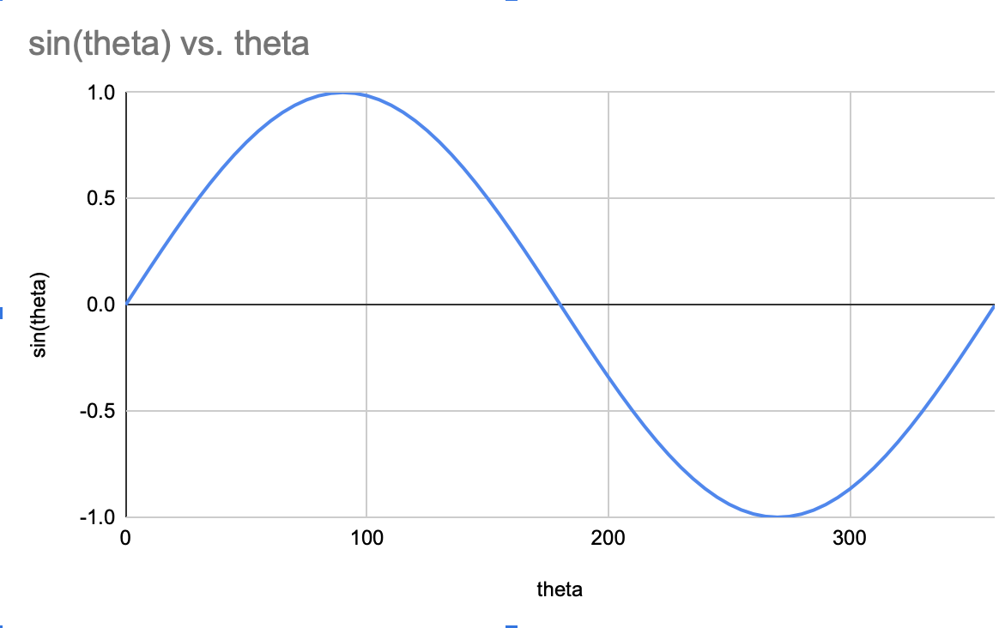

Projectile Motion
This is a simulator for projectile motion
As you play with the simulation, there are a few questions to think about.
- Which launch angle gives us the most horizontal distance?
- Can we make a mathematical formula for the distance traveled by the projectile(a.k.a. the range)?
The formula for the motion of the projectile in the \(x\) direction is given by \[x = {x_0 + v_{0x}t + {1 \over 2} at^2}\] Remember that \(v_{0x} = v_0\times \cos(\theta)\) To get the range of the projectile, we need to find the value of \(\theta\) that gives us the maximum distance. We also can simplify our coordinates, as we are launching from the ground. We can do this by placing the origin of our coordinate system at the initial launch point. This gives us \(x_0 = 0\). Also remember that there is no acceleration in the x direction, gravity points straight down! With these facts in mind, our equation now looks like this. \[x = v_0\cos(\theta)t \] Now what we need to do is find what value of \(t\) gives us the time at which the projectile hits the ground. How can we do this? The easiest way is to exploit the symmetry of the problem. Look at the parabolic arcs the projectile made in the simulation. They are symmetrical about the point where the height of the projectile is maximized. This means that we find the time to reach that point, and double it. This works because the time to reach the max height from the launch point will be equal to the time needed to go from the max point to where it hits the ground. \[t_{final} = 2\times t_{hmax}\] We can use a formula that represents motion in the y-direction to solve for these times. Remember that motion in the y-direction for a projectile is governed by the following formulas: \[y = {v_{0y}t - {1 \over 2} gt^2}\] \[v_y = v_{0} - gt\] The second formula actually holds the key to solving this. At the maximum height, \(v_y\) must be equal to 0. At the moment where the projectile reaches its maximum height, it can't have any velocity in either direction, as it would not be the maximum height if either of these were true. \[0 = v_{0y} - gt_{hmax}\] \[v_{0y} = gt_{hmax}\] \[v_{0}\sin(\theta) = gt_{hmax}\] \[t_{hmax} = {v_{0}\sin(\theta) \over g}\] Doubling this time to reach the maximum height gives us the time to reach the maximum range. \[t_{range} = {2v_{0}\sin(\theta) \over g}\] We can now plug in this expression for time into our formula for motion in the x direction. \[x = v_0\cos(\theta)t \] \[x = v_0\cos(\theta)({2v_{0}\sin(\theta) \over g}) \] \[x = {2v_0^2\cos(\theta)\sin(\theta) \over g} \] This is where those trig identities come back into play. Remember that \[2\sin(\theta)\cos(\theta) = \sin(2\theta)\] which gives us the following: \[Range = {v_0^2\sin(2\theta) \over g} \] Now we need to maximize the range. Remember that the values the sine function can return are in the interval \([-1,1]\). This means we need to determine what argument of the sine function will return the value 1. Looking at a graph of \(sin(\theta)\) over the domain \((0,360^o)\) we see:
We get the value of 1 at 90 degrees. The sin function repeats this same pattern to infinity in either directions, so in reality we get 1 at 90 degrees plus or minus any integer multiple of 360. We generally like to work in radians, so this could also be given as \({\pi \over 2} + 2n\pi\) such that \(n \in \{\ldots,-2,-1,0,1,2,\ldots\}\).
Remember, we are doing physics, not math! While \(n\) can take any integer value, we are defining the launch angle as the angle from the ground, so the valid domain is only \([0,\pi]\). Therefore, for the sake of this problem, we only need to think about how \(\sin(\theta)\) is maximized at \(\pi \over 2\) ( or \(90^o\)) \[1 = \sin(2\theta)\] \[90^o = 2\theta\] \[\theta_{max} = 45^o = {\pi\over 2}\] According to our derivation, the maximum range is achieved at a launch angle of 45 degrees. Did this agree with what you saw in the simulation?